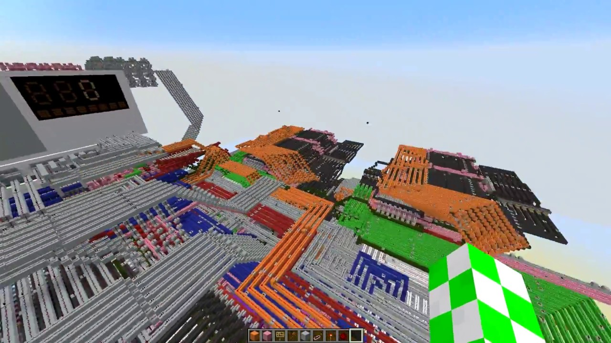
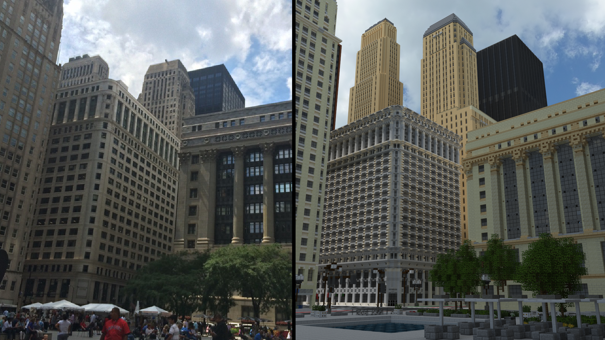

Introduction
Minecraft is a 3D sandbox game made by Mojang Studios. It was developed in Java by Markus Persson, also known as Notch. It was officially released on 18 November 2011; there was however a public alpha testing phase that began in 2009. Being a sandbox game, Minecraft does not set specific goals for the player to accomplish and instead offers him complete freedom in its world.
Gameplay
The game is set in a world made mostly of cubes (AKA “blocks”), where one is free to build and mine, playing mostly in a first- person perspective. The amount of creative freedom the game offers is staggering, allowing players to build things such as replicas of entire cities, a working cell phone, and even a quad-core computer.
|  |
| A quad-core computer built in Minecraft |
|  |
| 1:1 scale representation of Chicago in Minecraft |
The game at its base was mainly a survival game, where a player is thrust into a world where they should survive and later on thrive. The player initially had to overcome the challenge of procuring food and shelter from monsters.
 |
| Minecraft combat |
However, later on the player would set their own goals, which would most likely involve building ever more intricate constructions. Minecraft offers replayability not only through its sandbox nature but also the quantity and variety of its user modifications. Many of these exist and each of them can make the game feel completely different, adding spice to an already entertaining game. Most difficult builds such as those mentioned previously would not be realized in the default survival gamemode but in a creative one, where the player has access to unlimited resources and can focus solely on building.
Development
In its early stages, Minecraft was just a passion project Persson was working on. Initially, he put up his first alpha version of the game for testing and the response was very positive. He later went on to make it pay-to-play to be able to continue working on it. During the alpha it gained a sizeable following, and by the time it was released in 2011 it had over 1 million registered users. Afterwards, its popularity would continue to skyrocket thanks to many of the younger generations of gamers taking a liking to it because of the potential for creative expression in its virtual world.
Legacy
Minecraft was so successful that it spawned several copycats that would go on to try and replicate the formula, failing however to nail it spot on. It has certainly left a mark in the hearts of gamers, having accompanied them in their childhood, but it has also influenced the gaming industry by inspiring many aspiring game creators to not be afraid to develop a game without a big team, in other words showing them an alternative route: that of indie development. Still today it has incredible sway among kids and will most likely continue to do so for a long time, never truly disappearing.